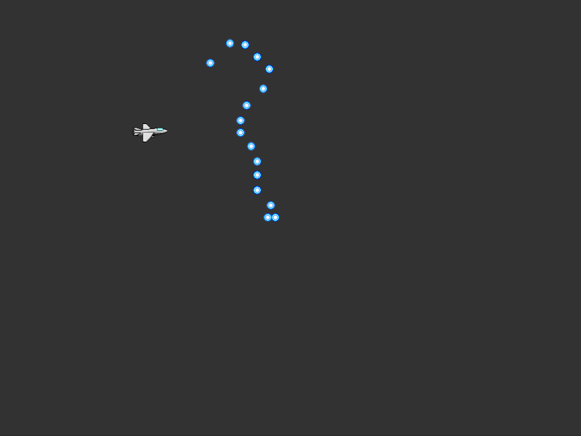
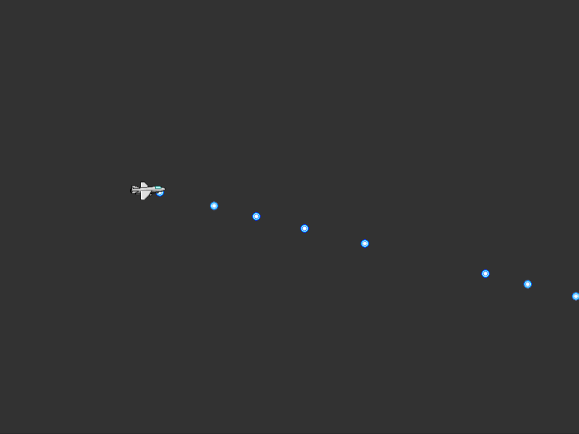

3章 : キャラクターに弾を撃たせてみよう
前章ではキャラクターの移動まで行いました。
次は，シューティングゲームとして大事な要素の一つ，弾の発射を実装していきましょう。
弾の生成
まず以下のコードを追加します。
using Altseed2;
using System;
+ using System.Collections.Generic;
namespace Tutorial
{
class Program
{
[STAThread]
static void Main(string[] args)
{
// エンジンを初期化
Engine.Initialize("Tutorial", 960, 720);
// 自機
var player = new SpriteNode();
// 自機のテクスチャを読み込む
player.Texture = Texture2D.LoadStrict("Resources/Player.png");
// 自機の座標を設定
player.Position = new Vector2F(100, 360);
// 自機の中心座標を設定
player.CenterPosition = player.ContentSize / 2;
// 自機をエンジンに追加
Engine.AddNode(player);
// メインループ
while (Engine.DoEvents())
{
// エンジンを更新
Engine.Update();
// ↑キーでY座標を減少
if (Engine.Keyboard.GetKeyState(Key.Up) == ButtonState.Hold)
{
player.Position += new Vector2F(0.0f, -2.5f);
}
// ↓キーでY座標を増加
if (Engine.Keyboard.GetKeyState(Key.Down) == ButtonState.Hold)
{
player.Position += new Vector2F(0.0f, 2.5f);
}
// →キーでX座標を増加
if (Engine.Keyboard.GetKeyState(Key.Right) == ButtonState.Hold)
{
player.Position += new Vector2F(2.5f, 0.0f);
}
// ←キーでX座標を減少
if (Engine.Keyboard.GetKeyState(Key.Left) == ButtonState.Hold)
{
player.Position -= new Vector2F(2.5f, 0.0f);
}
+ // Zキーが押された時に実行
+ if (Engine.Keyboard.GetKeyState(Key.Z) == ButtonState.Push)
+ {
+ // 発射される自機弾
+ var bullet = new SpriteNode();
+ // 自機弾のテクスチャを読み込む
+ bullet.Texture = Texture2D.LoadStrict("Resources/Bullet_Blue.png");
+ // 自機弾の座標を設定
+ bullet.Position = player.Position;
+ // 自機弾の中心座標を設定
+ bullet.CenterPosition = bullet.ContentSize / 2;
+ // 自機弾の表示位置を自機より奥に設定
+ bullet.ZOrder--;
+
+ // 自機弾をエンジンに追加
+ Engine.AddNode(bullet);
+ }
// Escapeキーでゲーム終了
if (Engine.Keyboard.GetKeyState(Key.Escape) == ButtonState.Push)
{
break;
}
}
// エンジンの終了処理を行う
Engine.Terminate();
}
}
}
結果，画像の様にZキーを押すたびに弾が生成されるようになりますが，まだ弾は動いていません。
やっていることは前章と大して変わっていませんが，1つ見たことの無いものがありますね。
// 自機弾の表示位置を自機より奥に設定
bullet.ZOrder--;
ZOrderは，オブジェクトが手前側に描画されるか，奥側に描画されるかを表す数値です。
小さいほど奥側に，大きいほど手前側に表示されます。
同じ値の場合は手前/奥側に表示されるかどうかは不定です。
シューティングにおいては弾はプレイヤーや敵の奥側に表示されるものなので，ZOrderを--演算子を用いて1減らしています。

弾の移動
弾を動かすために以下のコードを追加します。
using Altseed2;
using System;
using System.Collections.Generic;
namespace Tutorial
{
class Program
{
[STAThread]
static void Main(string[] args)
{
// エンジンを初期化
Engine.Initialize("Tutorial", 960, 720);
+ // 自機弾を格納するリスト
+ var list = new List<SpriteNode>();
// 自機
var player = new SpriteNode();
// 自機のテクスチャを読み込む
player.Texture = Texture2D.LoadStrict("Resources/Player.png");
// 自機の座標を設定
player.Position = new Vector2F(100, 360);
// 自機の中心座標を設定
player.CenterPosition = player.ContentSize / 2;
// 自機をエンジンに追加
Engine.AddNode(player);
// メインループ
while (Engine.DoEvents())
{
// エンジンを更新
Engine.Update();
// ↑キーでY座標を減少
if (Engine.Keyboard.GetKeyState(Key.Up) == ButtonState.Hold)
{
player.Position += new Vector2F(0.0f, -2.5f);
}
// ↓キーでY座標を増加
if (Engine.Keyboard.GetKeyState(Key.Down) == ButtonState.Hold)
{
player.Position += new Vector2F(0.0f, 2.5f);
}
// →キーでX座標を増加
if (Engine.Keyboard.GetKeyState(Key.Right) == ButtonState.Hold)
{
player.Position += new Vector2F(2.5f, 0.0f);
}
// ←キーでX座標を減少
if (Engine.Keyboard.GetKeyState(Key.Left) == ButtonState.Hold)
{
player.Position -= new Vector2F(2.5f, 0.0f);
}
// Zキーが押された時に実行
if (Engine.Keyboard.GetKeyState(Key.Z) == ButtonState.Push)
{
// 発射される自機弾
var bullet = new SpriteNode();
// 自機弾のテクスチャを読み込む
bullet.Texture = Texture2D.LoadStrict("Resources/Bullet_Blue.png");
// 自機弾の座標を設定
bullet.Position = player.Position;
// 自機弾の中心座標を設定
bullet.CenterPosition = bullet.ContentSize / 2;
// 自機弾の表示位置を自機より奥に設定
bullet.ZOrder--;
// 自機弾をエンジンに追加
Engine.AddNode(bullet);
+ // 自機弾をリストに追加
+ list.Add(bullet);
}
+ // 自機弾を右に進める
+ for (int i = 0; i < list.Count; i++)
+ {
+ list[i].Position += new Vector2F(10.0f, 0.0f);
+ }
// Escapeキーでゲーム終了
if (Engine.Keyboard.GetKeyState(Key.Escape) == ButtonState.Push)
{
break;
}
}
// エンジンの終了処理を行う
Engine.Terminate();
}
}
}
これで発射された弾は右側に移動するようになりました。

ここでもまた始めてみるものが出てきました。
// 自機弾を格納するリスト
var list = new List<SpriteNode>();
List<T>は，"コレクション"と呼ばれるものの一つです。
コレクションは，要素をまとめてくれるものです。
例えば，List<int>であったらint型の整数を複数登録出来るものです。
List<T>はAddメソッドで末尾に要素を追加出来ます。
また，n番目に追加された要素を角括弧を用いてlist[n]の様にして取得する事が出来ます。
更に，list.Countとすることで登録された要素の個数を取得することもできます。
// 自機弾を右に進める
for (int i = 0; i < list.Count; i++)
{
list[i].Position += new Vector2F(10.0f, 0.0f);
}
先程追加されたコードのこの部分では番号を指定した要素の検索と一緒にfor文を用いています。
このfor文というのはC#における繰り返し構文の一つで，while文に機能を足したようなものです。
forは
for (繰り返し処理の前に行う事; 繰り返す条件; 繰り返し処理の最後に行われる事)
{
繰り返して行いたい処理
}
という風に書きます。
ここでは，繰り返し処理の前に行う事としてint i = 0を行い，int型の変数を定義して値に0をセットしました。
繰り返す条件はi < list.Countとなっており，iがリストの回数よりも小さいことが条件になっています。
繰り返し処理の最後に行われる事では，i++でiに1を加算しています。
この3つの記述によって，このfor文は鉤括弧内の処理をlist.Count回繰り返すという意味を持ちます。
この
for (int i = 0; i < 繰り返し回数; i++)
{
繰り返したい処理
}
という書き方はよく使います。
この書き方においてiは，繰り返しが何回行われたかを意味します。
つまり，
// 自機弾を右に進める
for (int i = 0; i < list.Count; i++)
{
list[i].Position += new Vector2F(10.0f, 0.0f);
}
ではlist内の要素を1つずつ取得して，それぞれの座標を右に動かしているのです。
ここで1つ疑問が浮かぶかもしれません。
あれ？iが0からスタートって，list[0]から始めるの？0番目っておかしくない？
となるかもしれませんが，List<T>において，検索する数字は0番目から始まります。
つまり，10個の要素が格納されているList<T>では，最初の要素は0番目に存在して最期の要素は9番目に存在しているという事です。
因みに，このfor文をwhile文に書き換えるとこんな感じになります。
int i = 0;
while (i < list.Count)
{
list[i].Position = new Vector2F(10.0f, 0.0f);
i++;
}
"指定回数繰り返す"という動作はfor文の方が便利なのでこちらを使うことをお勧めします。
他のコレクション
このチュートリアルでは以下のようなList<T>以外のコレクションも使っていきます。
コレクションごとに特徴が多種多様で難しいため，余裕がない場合はここは後で読むくらいで構いません。
- 配列
- HashSet<T>
- Queue<T>
配列はList<T>とよく似ていますが，Addメソッドで要素の追加をするのではなく，array[0] = 3;のように直接代入することしかできません。
また，要素数はCountではなくLengthを用いて取得します。
HashSet<T>は同じ要素を2つ以上格納できないコレクションです。つまり，set.Add(3);を何回行っても3は1つしか格納されていません。
また，List<T>や配列の様に何番目の要素は…と言った検索はできません。
その代わり，他のコレクションに比べ要素の追加や削除が高速で行えるという特徴があります。
Queue<T>は"先入れ先出し"とも言われるコレクションで，Enqueueメソッドで末尾に要素を追加します。
要素を取り出すときはDequeueメソッドを使用しますが，この操作で取り出せるのは先頭の要素です。
また，Dequeueメソッドで先頭の要素を取り出したとき，その要素はQueue<T>内から自動的に削除されます。